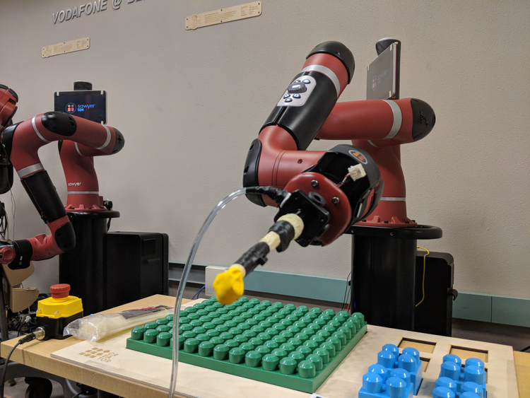
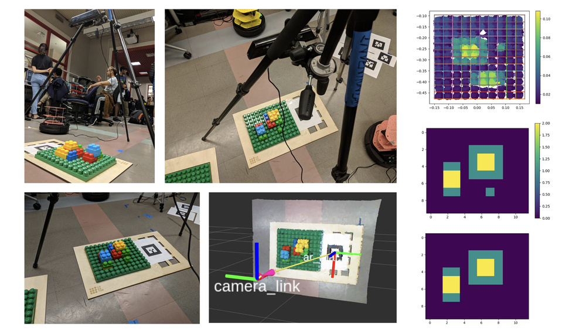
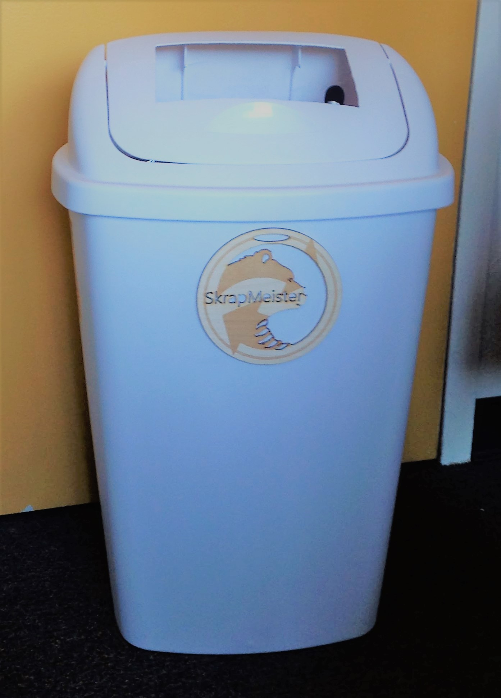
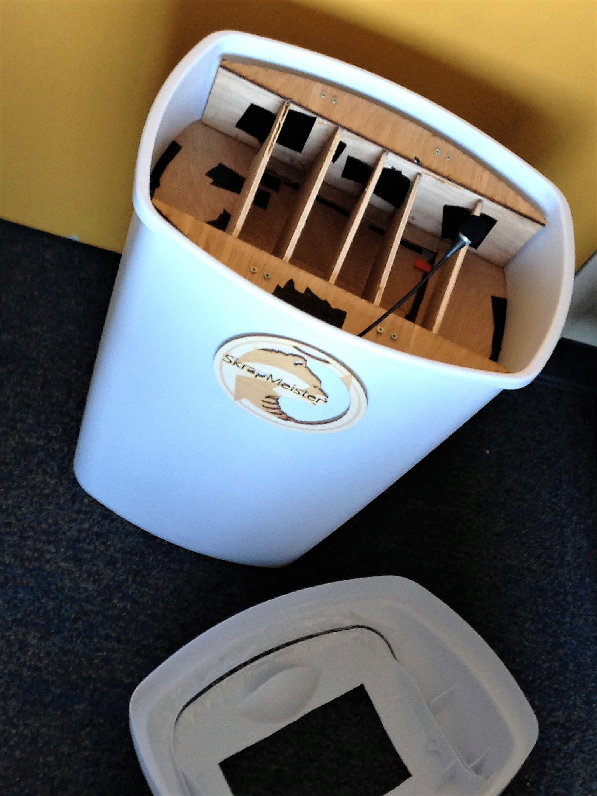

Projects
I'm a big fan of robotics, and I've worked on lots of projects to that end both big and small. Most of my recent work has been in microrobots and swarm robotics, but I've also worked on different projects across the field, from robotic grasping to autonomous optical testing stations. I also enjoy branching out in different sides of the tech stack, and I've done projects in areas like computer vision, machine learning, and server management.
I've listed some of my favorites below:
The Creator
I worked to program a robot to inspect a structure built out of MEGABLOKS and autonomously replicate the structure. We accomplished this task by using computer vision to generate a computerized model of the structure, which we then sent to a Baxter or Sawyer robotic arm to pick and place blocks in their respective positions.

The Creator setup
Demonstration of the Creator building a pyramid

A collective graphic of the computer vision setup and processing
I designed this system as my final project for EECS C106A (Introduction to Robotics) at UC Berkeley, which generously supplied the Baxter and Sawyer robotic arms for the project.
See the full project page here!
Skrapmeister
To promote responsible disposal and improve the quality of dorm life, I built an interactive trashcan organizer in line with UC Berkeley’s goal of Zero Waste by 2020. It featured multiple bins for trash, compost, and recycling that could be chosen from via voice activation. Its enclosed design also works to keep away flies and minimize odors from old trash and compost, enhancing the hygiene of college life.

Front view, featuring our laser-cut logo

Top view, demonstrating our microphone and trash segmentation
I designed this system as part of Robotics@Berkeley's competition Dorm Ex Machina in fall 2017, where it won the "Most Useful Product" award for its exceptional focus on environmental awareness.